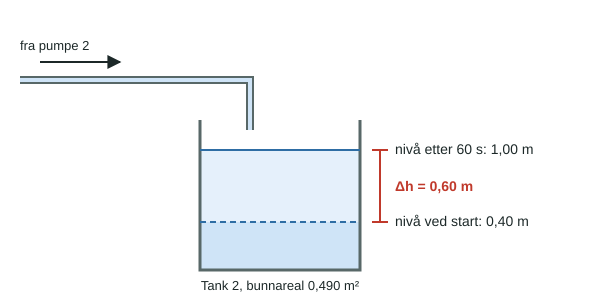
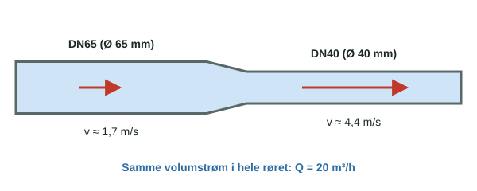

Strømning i rør
I et prosessanlegg må du vite hvor mye som strømmer gjennom rørene, og hvor fort det går. Her lærer du forskjellen på volumstrøm, massestrøm og strømningshastighet, og hvordan du regner mellom dem. Eksemplene er fra pumperommet på skolen.
Volumstrøm: hvor mye per tid
Volumstrøm er hvor stort volum som strømmer forbi per tid. Symbolet er Q.
\[ Q = \frac{V}{t} \]
- Q = volumstrøm (m3/s)
- V = volum (m3)
- t = tid (s)
I anlegget oppgis volumstrøm ofte i m3/h eller L/s. På skiltet til pumpe 2 står det 20 m3/h. Når du skal regne videre, gjør du om til m3/s:
\[ 20 \text{ m}^3\text{/h} = \frac{20 \text{ m}^3}{3600 \text{ s}} = 0{,}005\,56 \text{ m}^3\text{/s} = 5{,}56 \text{ L/s} \]
- Fra m3/h til m3/s: del på 3600 (antall sekunder i en time).
- 1 m3 = 1000 L. Fra m3/s til L/s: gang med 1000.
Mål volumstrømmen selv
Pumperommet har ingen mengdemåler som viser volumstrømmen. Du kan likevel finne den. Pump vann inn i en tank med stengt bunnventil, og mål hvor fort nivået stiger. Volumet som kommer inn, er bunnarealet ganget med hvor mye nivået stiger.

Oppgave: Tank 2 har diameter 0,79 m. Pumpe 2 fyller tanken, og bunnventilen er stengt. Nivået stiger 0,60 m på 60 s. Hva er volumstrømmen?
- Bunnarealet (sirkel): \( A = \dfrac{\pi \cdot d^2}{4} = \dfrac{\pi \cdot (0{,}79 \text{ m})^2}{4} = 0{,}490 \text{ m}^2 \)
- Volumet som har kommet inn: \( V = A \cdot \Delta h = 0{,}490 \text{ m}^2 \cdot 0{,}60 \text{ m} = 0{,}294 \text{ m}^3 \)
- Volumstrøm: \( Q = \dfrac{V}{t} = \dfrac{0{,}294 \text{ m}^3}{60 \text{ s}} = 0{,}004\,90 \text{ m}^3\text{/s} \)
- I andre enheter: 4,90 L/s, eller \( 0{,}004\,90 \cdot 3600 \approx 17{,}6 \text{ m}^3\text{/h} \)
Svar: Volumstrømmen er ca. 4,9 L/s, eller ca. 18 m3/h. Det er litt mindre enn 20 m3/h som står på skiltet. Hvor mye pumpen gir, avhenger av motstanden i anlegget. Skiltet viser ett driftspunkt: 20 m3/h ved 15 mVs. Mer motstand gir mindre volumstrøm, se pumpekurven på siden Rør, ventiler og pumper.
Massestrøm: hvor mange kilo per tid
I massebalanser regner du i kilo, ikke liter. Det så du på siden Massebalanse i et anlegg. Massestrøm er hvor mange kilo som strømmer forbi per tid. Du finner den fra volumstrømmen og tettheten:
\[ \dot{m} = \rho \cdot Q \]
- \( \dot{m} \) = massestrøm (kg/s). Prikken over m betyr «per tid».
- ρ = tetthet (kg/m3)
- Q = volumstrøm (m3/s)
For vann er tettheten ca. 1000 kg/m3. Da er 1 L omtrent 1 kg, og 4,90 L/s vann er ca. 4,90 kg/s. For andre væsker må du bruke tettheten deres.
Strømningshastighet: hvor fort det går
Strømningshastighet er hvor fort væsken beveger seg inne i røret, i m/s. Den avhenger av volumstrømmen og hvor stort tverrsnittsarealet av røret er, altså arealet av sirkelen du ser hvis du kapper røret på tvers.
\[ v = \frac{Q}{A} \qquad A = \frac{\pi \cdot d^2}{4} \]
- v = strømningshastighet (m/s)
- Q = volumstrøm (m3/s)
- A = tverrsnittsareal av røret (m2)
- d = innvendig diameter (m)
Rørstørrelser oppgis som DN (nominell diameter). DN40 er et rør som er omtrent 40 mm innvendig. Den nøyaktige innvendige diameteren avhenger av hvor tykk rørveggen er. På denne siden regner vi med at DN40 er 40 mm.

Oppgave: Pumpe 2 gir 20 m3/h. Røret inn til pumpen er DN65, og røret ut er DN40. Hvor stor er hastigheten i hvert av rørene?
- Volumstrøm i m3/s: \( Q = \dfrac{20}{3600} = 0{,}005\,56 \text{ m}^3\text{/s} \)
- Areal DN65: \( A = \dfrac{\pi \cdot (0{,}065 \text{ m})^2}{4} = 0{,}003\,32 \text{ m}^2 \)
- Hastighet DN65: \( v = \dfrac{0{,}005\,56 \text{ m}^3\text{/s}}{0{,}003\,32 \text{ m}^2} \approx 1{,}7 \text{ m/s} \)
- Areal DN40: \( A = \dfrac{\pi \cdot (0{,}040 \text{ m})^2}{4} = 0{,}001\,26 \text{ m}^2 \)
- Hastighet DN40: \( v = \dfrac{0{,}005\,56 \text{ m}^3\text{/s}}{0{,}001\,26 \text{ m}^2} \approx 4{,}4 \text{ m/s} \)
Svar: Ca. 1,7 m/s inn til pumpen og ca. 4,4 m/s ut fra pumpen. 4,4 m/s er høyt for vann i et rør. Det gir stort trykktap i DN40-røret.
Det som går inn, må komme ut
Når røret er fullt av væske, kan ikke vannet hope seg opp eller bli borte på veien. Like mye må passere hvert sted i røret hvert sekund. Volumstrømmen er derfor den samme i den vide og den smale delen. Dette er massebalansen fra siden Massebalanse i et anlegg, brukt på et rør.
At volumstrømmen er lik overalt, gjelder for væsker. Væske lar seg nesten ikke presse sammen, så 1 L væske tar like stor plass i hele røret. En gass kan presses sammen. Da er det massestrømmen som er lik overalt, ikke volumstrømmen.
\[ Q = v_1 \cdot A_1 = v_2 \cdot A_2 \]
Diameteren står i annen potens i arealet. Halverer du diameteren, blir arealet fire ganger mindre, og hastigheten blir fire ganger så stor.
Høy hastighet gir mer friksjon, mer støy og mer slitasje i rør og ventiler. Den gir også større trykktap, slik at pumpen må jobbe hardere. Svært lav hastighet krever store og dyre rør, og partikler i væsken kan legge seg på bunnen. For vann i pumperør er en hastighet på omtrent 1–3 m/s vanlig.
Inn til en pumpe holdes hastigheten lavere enn ut fra den. Da blir trykktapet i sugerøret lite, og trykket inn til pumpen holder seg høyt nok. Blir trykket for lavt, kan væsken koke inne i pumpen selv om den er kald. Det dannes dampbobler som klapper sammen og skader pumpehjulet. Det kalles kavitasjon. Mer om dette lærer du i Enhetsoperasjoner.
Vann i fart er tungt og vanskelig å stoppe. Stenger du en ventil brått, må all væsken i røret stoppe på et øyeblikk. Da kan trykket stige kraftig i et kort støt. Det kalles væskeslag, og det kan høres som et smell i røret. Væskeslag kan skade rør, pakninger og målere. Steng og åpne ventiler rolig, særlig når hastigheten er høy.
Test deg selv
En pumpe gir 36 m3/h. Hvor mange liter per sekund er det?
- 0,01 L/s
- 3,6 L/s
- 10 L/s
\( 36 / 3600 = 0{,}010 \text{ m}^3\text{/s} = 10 \text{ L/s} \)
Vann strømmer med 3,0 L/s. Hva er massestrømmen?
- ca. 3,0 kg/s
- ca. 0,003 kg/s
- ca. 3000 kg/s
For vann er 1 L ca. 1 kg. \( \dot{m} = \rho \cdot Q = 1000 \cdot 0{,}0030 = 3{,}0 \text{ kg/s} \)
Volumstrømmen er 0,010 m3/s, og tverrsnittsarealet i røret er 0,0050 m2. Hva er strømningshastigheten?
- 0,5 m/s
- 2,0 m/s
- 0,000 05 m/s
\( v = Q / A = 0{,}010 / 0{,}0050 = 2{,}0 \text{ m/s} \)
Et rør går over fra vid til smal diameter. Hva skjer med volumstrømmen i den smale delen?
- Den blir mindre.
- Den er den samme.
- Den blir større.
Like mye må passere hvert sted i røret hvert sekund. Det er hastigheten som øker, ikke volumstrømmen.
Du bytter til et rør med halvparten så stor diameter, men volumstrømmen er den samme. Hva skjer med hastigheten?
- Den blir dobbelt så stor.
- Den blir fire ganger så stor.
- Den blir halvparten så stor.
Arealet er \( \pi \cdot d^2 / 4 \). Halv diameter gir en firedel av arealet, og da blir hastigheten fire ganger så stor.
Ordliste
| Begrep | Forklaring | Engelsk |
|---|---|---|
| volumstrøm | Hvor mange liter eller kubikkmeter som strømmer forbi per sekund eller per time. | volumetric flow rate |
| massestrøm | Hvor mange kilo som strømmer forbi per tid, for eksempel i kg/s eller kg/h. | mass flow rate |
| strømningshastighet | Hvor fort væsken eller gassen beveger seg i røret, målt i meter per sekund. | |
| tverrsnittsareal | Arealet av flaten du ser når du kapper et rør på tvers. For et rundt rør er det π · d² / 4. | |
| DN | Nominell diameter: standardstørrelsen på et rør. DN40 er omtrent 40 mm innvendig. | nominal diameter (DN) |
| kavitasjon | Når væsken koker i pumpen fordi trykket blir for lavt, og dampboblene klapper sammen igjen der trykket er høyere. Gir støy og skader pumpehjulet. | cavitation |
| væskeslag | Et kraftig trykkstøt i et rør når væske i fart stoppes brått, for eksempel når en ventil stenger fort. Kalles også vannslag. | water hammer |
Les mer
- Forrige side: Trykk i væsker.
- Neste side: Rør, ventiler og pumper.
- Massestrømmer i balanser: Massebalanse i et anlegg.
- Mengdemålere i anlegget: Automasjon.
Om kildene: Teksten, eksemplene og figurene på denne siden er laget for dette nettstedet. Tallene for tankene og pumpene er hentet fra flytskjemaet for pumperommet ved Sauda vgs. Siden bygger på undervisningsopplegg i kjemiprosess- og laboratoriefag ved Sauda vgs, som er utarbeidet med utgangspunkt i blant annet Kjemien stemmer, Laboranten og åpne nettkilder.